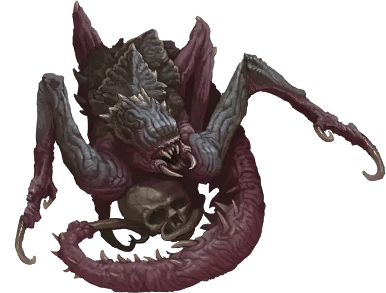

Падальщик порождений ядра
Core Spawn Crawler
Маленькая Аберрация, хаотично-злая

Класс Доспеха 12
Хиты 21 (6к6)
Скорость 30 футов
| мод | спас | ||
|---|---|---|---|
| СИЛ | 7 | −2 | −2 |
| ЛОВ | 14 | +2 | +2 |
| ТЕЛ | 10 | +0 | +0 |
| мод | спас | ||
|---|---|---|---|
| ИНТ | 9 | −1 | −1 |
| МДР | 12 | +1 | +1 |
| ХАР | 6 | −2 | −2 |
Навыки Восприятие +6
Иммунитет к урону психическая энергия
Иммунитет к состояниям ослепление
Чувства слепое зрение 30 футов (слеп за его пределами), пассивное Восприятие 15, чувство вибрации 60 футов
Языки Глубинная речь
Опасность 1 (200 опыта)
Бонус мастерства +2
Особенности
Языки. Понимает Глубинную речь, но не говорит.
Тактика стаи. Падальщик совершает с преимуществом броски атаки по существу, если как минимум один союзник падальщика находится в пределах 5 футов от этого существа, и этот союзник дееспособен.
Действия
Мультиатака. Падальщик совершает четыре атаки: одну Укусом, две Когтями и одну Хвостом.
Укус. . Рукопашная атака оружием: +4 к попаданию, досягаемость 5 футов, одно существо. Попадание: 4 (1к4 + 2) колющего урона, и цель должна преуспеть в спасброске Мудрости Сл 11, иначе станет испуганной до начала следующего хода падальщика.
Когти. . Рукопашная атака оружием: +4 к попаданию, досягаемость 15 футов, одна цель. Попадание: 4 (1к4 + 2) рубящего урона.
Хвост. . Рукопашная атака оружием: +4 к попаданию, досягаемость 15 футов, одна цель. Попадание: 5 (1к6 + 2) колющего урона.
Описание
Самые маленькие и многочисленные из порождений ядра, эти безглазые существа снуют в подземной тьме с помощью своих четырех неправильных, неуклюжих рук и крючковатых цепких хвостов. Падальщики порождения ядра редко путешествуют в одиночку, и группа этих проворных хищников известна как стая падальщиков. Их клацающие когтистые конечности предупреждают об их присутствии, когда они пробираются сквозь, наполненные тенями, глубины земли.
Порождения ядра
Древнее Зло нападает на мультивселенную загадочными и разрушительными способами. Иногда они проникают на Материальный план, используя непостижимую энергию и тьму, обитающие в глубинах мира. Эти земные проявления отвратительных инопланетных замыслов известны как порождения ядра, и они столь же разнообразны по своей физиологии, сколь и ужасны.
Их концентрация в пустынных землях Блайтшора делает порождений ядра проблемой для исследований, и многие из тех кто пытался наблюдать или изучать этих кошмарных существ, редко возвращаются. Те, кто все-таки возвращается, часто являются оболочками своих прежних "я", которые говорят об ужасающих подземных лабиринтах извилистых пещер и кошмарных гнездах, куда других обитателей Мискат Стрэнда тащат вниз для какой-то адской цели.
Порождение Катастрофы. Аберрации, известные как порождения ядра, представляют собой подземную породу вестников, слуг, пехотинцев и лейтенантов Древнего Зла, пробужденных в глубинах катастрофическими действиями Богов-Предателей и их приспешников. Они часто появляются на поверхности планеты в результате сейсмических событий, таких как то, что создало бездонную Пропасть Мискат в Восточном Винандире. Колдуны и культисты иногда собираются вместе, чтобы ускорить прибытие порождений ядра на Материальный план, сосредотачивая свою мистическую силу на областях естественной сейсмической нестабильности, когда знаки и звезды правильно выстроены.